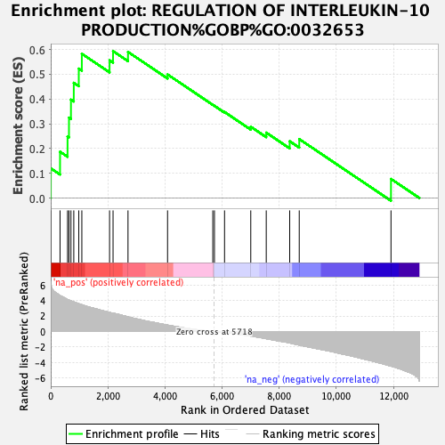
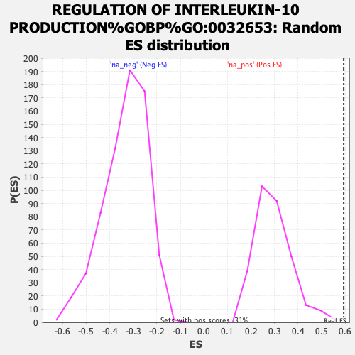

| | | Dataset | ranked_genes_2 |
| Phenotype | NoPhenotypeAvailable |
| Upregulated in class | na_pos |
| GeneSet | REGULATION OF INTERLEUKIN-10 PRODUCTION%GOBP%GO:0032653 |
| Enrichment Score (ES) | 0.5933045 |
| Normalized Enrichment Score (NES) | 2.017092 |
| Nominal p-value | 0.0 |
| FDR q-value | 0.11732843 |
| FWER p-Value | 0.549 |
Table: GSEA Results Summary

Fig 1: Enrichment plot: REGULATION OF INTERLEUKIN-10 PRODUCTION%GOBP%GO:0032653
Profile of the Running ES Score & Positions of GeneSet Members on the Rank Ordered List
| SYMBOL | RANK IN GENE LIST | RANK METRIC SCORE | RUNNING ES | CORE ENRICHMENT | | 1 | F2RL1 | 3 | 6.084 | 0.1200 | Yes |
| 2 | TRIB2 | 326 | 4.655 | 0.1871 | Yes |
| 3 | CD46 | 589 | 4.129 | 0.2484 | Yes |
| 4 | ISG15 | 639 | 4.053 | 0.3247 | Yes |
| 5 | TNFRSF21 | 708 | 3.946 | 0.3975 | Yes |
| 6 | TLR4 | 807 | 3.814 | 0.4653 | Yes |
| 7 | CD47 | 982 | 3.583 | 0.5226 | Yes |
| 8 | PYCARD | 1089 | 3.452 | 0.5826 | Yes |
| 9 | VSIR | 2060 | 2.464 | 0.5561 | Yes |
| 10 | DLL1 | 2182 | 2.358 | 0.5933 | Yes |
| 11 | HMGB1 | 2705 | 1.886 | 0.5901 | No |
| 12 | INAVA | 4090 | 0.829 | 0.4991 | No |
| 13 | PIBF1 | 5674 | 0.015 | 0.3766 | No |
| 14 | STAT3 | 5731 | -0.003 | 0.3723 | No |
| 15 | PLCG2 | 6085 | -0.131 | 0.3475 | No |
| 16 | THBS1 | 7003 | -0.585 | 0.2879 | No |
| 17 | HSPD1 | 7545 | -0.922 | 0.2642 | No |
| 18 | AGER | 8366 | -1.466 | 0.2295 | No |
| 19 | JAK3 | 8700 | -1.746 | 0.2382 | No |
| 20 | PRKCZ | 11912 | -4.462 | 0.0773 | No |
Table: GSEA details [plain text format]

Fig 2: REGULATION OF INTERLEUKIN-10 PRODUCTION%GOBP%GO:0032653: Random ES distribution
Gene set null distribution of ES for REGULATION OF INTERLEUKIN-10 PRODUCTION%GOBP%GO:0032653